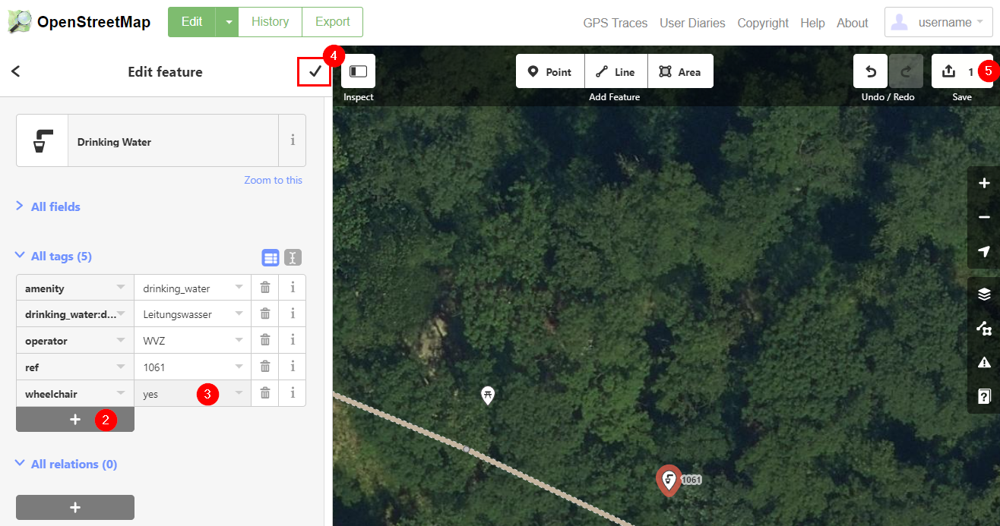
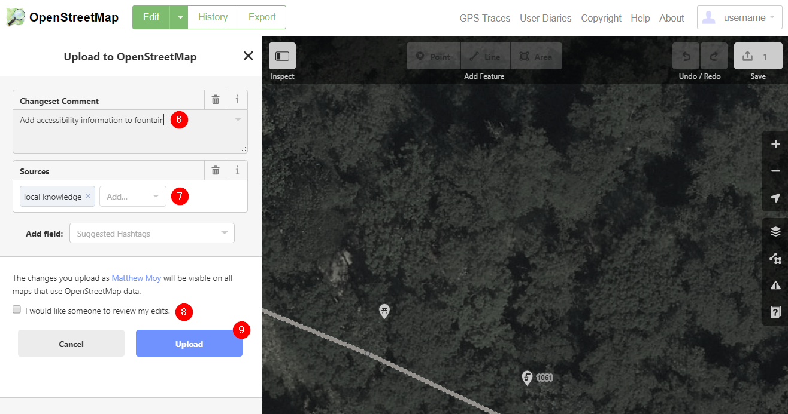
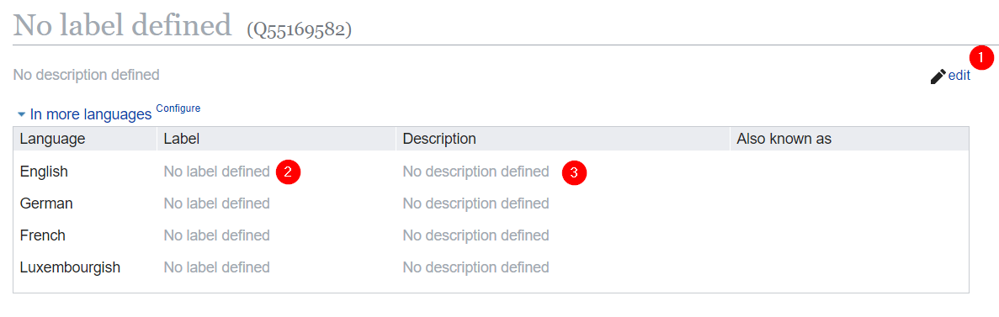
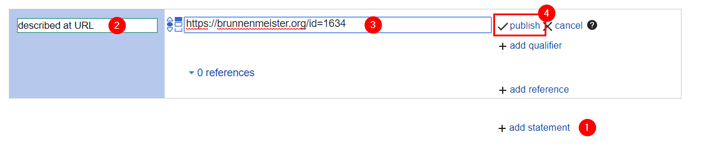

{{'dialog.status.fountain_not_exist' | translate}}
{{'dialog.status.property_not_available' | translate}}
0. Create an OpenStreetMap account (sign up here) and/or log in (log in here).
1. Once you are logged in, select the fountain and click "edit".
2. In the "All tags" section, create the {{metadata[(property|async).id].src_config.osm.src_instructions.en[1]}} tag, if it does not yet exist.
3. Define the value of the property.
2-3. This property is not defined by a tag. Ignore these steps
4. To continue editing other fountains, click the checkmark.
5. To upload your changes, click the "save" button.
6. Enter a short description of your changeset.
7. It is helpful to indicate how you obtained your information.
8. If you aren't sure whether your edits were correct, tick the "review request" box.
9. When you are ready to commit your changes, click the "upload" button.
To fetch the data from the databases, a reprocessing needs to be initiated. Please wait about 5-10 minutes before reprocessing, because changes to OpenStreetMap take some time to become available.
0. Create a Wikidata account (sign up here) and/or log in (here).
1. Click the "edit" button in the upper right after the item label.
2. Provide a label for the fountain in the appropriate languages. This is what will appear as the fountain's name.
3. Provide a short description of the fountain in the appropriate languages. This can include what kind of fountain it is, the artist, and the location
1. Create a new statement by clicking the button at the bottom right of the statement list.
2. Define the statement type as {{metadata[(property|async).id].src_config.wikidata.src_instructions.en[1]}}
3. Provide the value of the statement.
4. Click "publish" to save the statement.
Identify the "Wikipedia" sitelink section at the bottom of the page and click "edit".
1. Provide the language code of the Wikipedia page, e.g. "en", "de", or "fr".
2. Provide the name of the Wikipedia page.
3. Click "publish" to save the changes.
To fetch the data from the databases, a reprocessing needs to be initiated. You may need to wait a wait a few moments before trying to reprocess the fountain.